Using the Filters
Opening the filter menu
To open the filter menu, find the word "FILTERS" on the top left of the page and click on it.
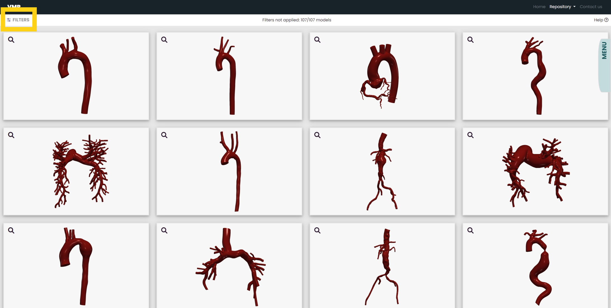About the filter menu
The Gallery Header
At the top of the gallery, there is a header that indicates how many models are showing in the gallery. It also displays whether or not there are filters currently being applied.
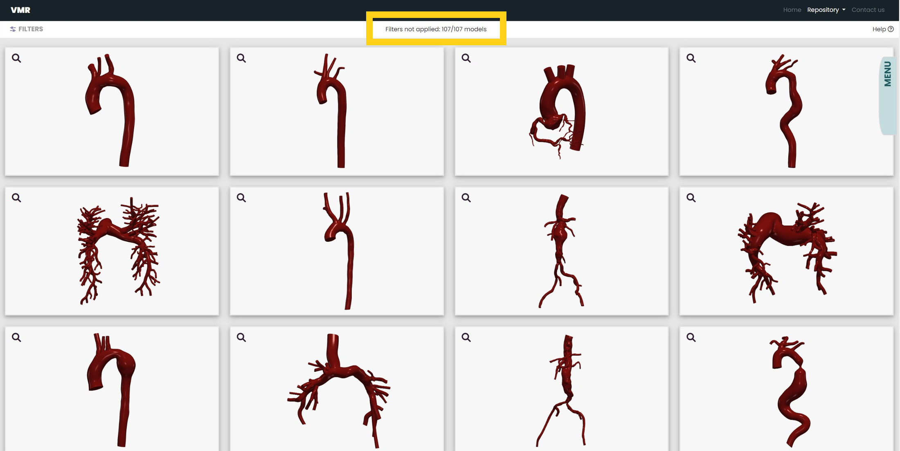The Error Message
If what you are looking for is too specific, an error message may appear. If so, it means the specific models you are searching for are not currently avaliable in our repository. You may need to enter in fewer specifications into the filter for models to appear in the gallery.
 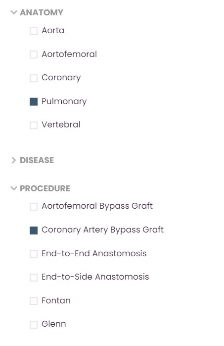
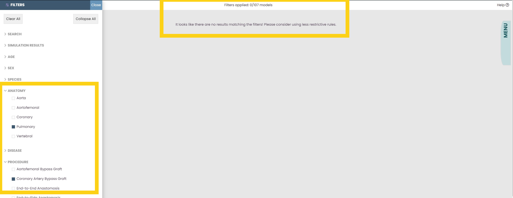
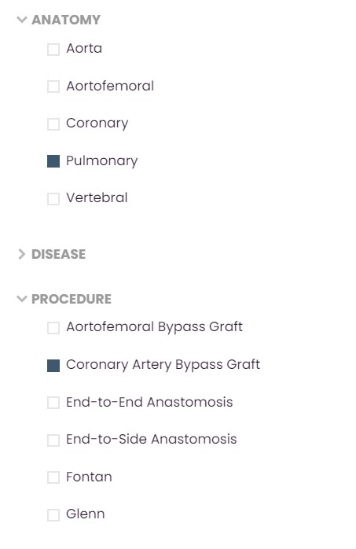
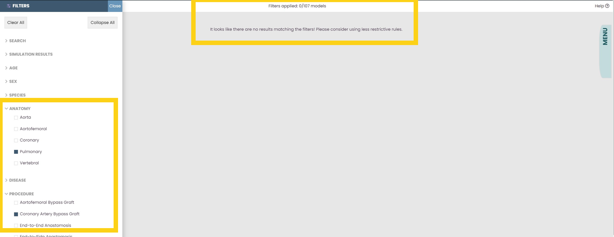
In the example above, an error message has appeared. This is because the Vascular Model Repository does not currently contain models that are of pulmonary arteries that have undergone the coronary artery bypass graft procedure.
The Clear All Button
If you want to return to the default state of the dataset gallery, click on the Clear All button. It will clear all of the filters that are currently applied.
 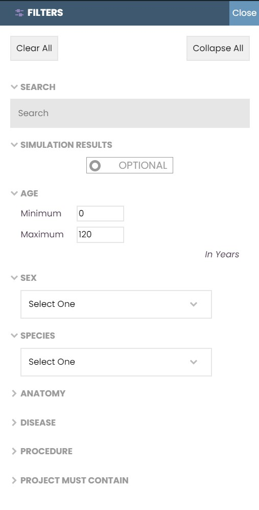
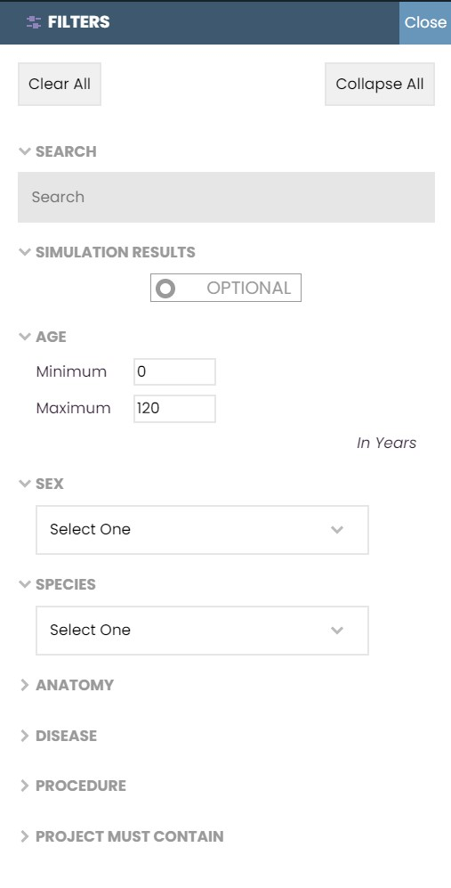
The Collapse All Button
If you want to collapse all the filter menus, click on the Collapse All Button. Doing so, however, will not clear the filters that are currently applied.
 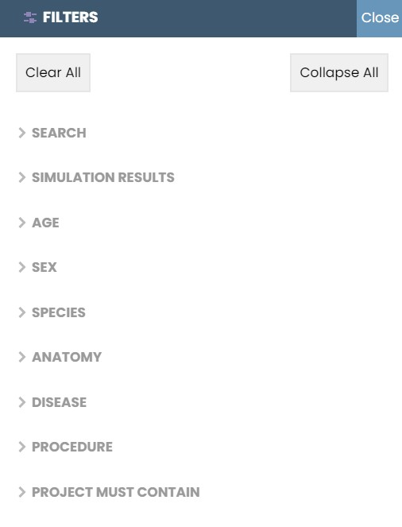
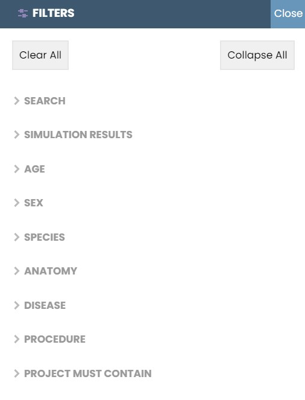
In the example above, the collapse all button has been pressed, which collapsed all the filter headers. The filters remain applied.
Looking at the different categories
The Search Bar
With the search bar, you are able to search for specific models. To search for multiple characteristics, add a space between each characteristic. To apply the filter, write in an entry and hit the ENTER key.
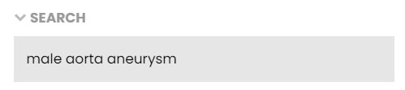 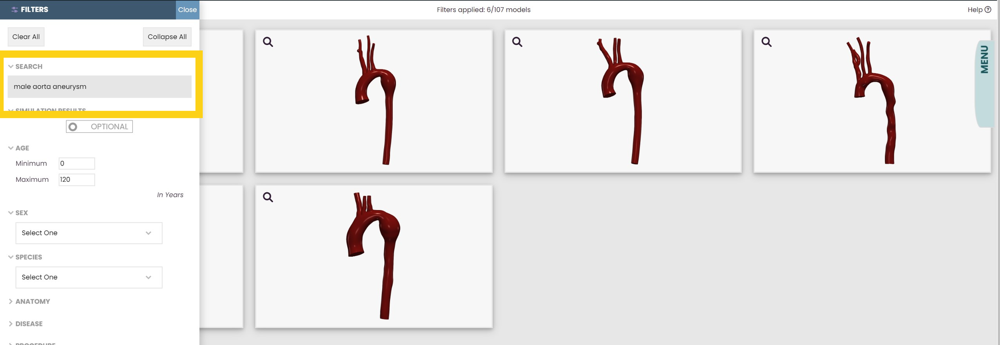In the example above, the models that are a result of the search bar entry are all male models of aortas that have aneurysms.
If you are looking for one specific model, you can also search for the name of that model in the search bar.
The Simulation Results Filter
Some models in this repository have simulation result files that you can download. For more information about these files, go to Documentation. This filter allows you to search for the models whose simulation results are avaliable.

Above is what the default for the simulation results button is. In this state, no models are being filtered for simulation results.
To apply this filter, click on the mode you want to be in. If "MUST HAVE" is showing, you are filtering for the models that have simulation results. If "OPTIONAL" is showing, you are not filtering for simulation results.
 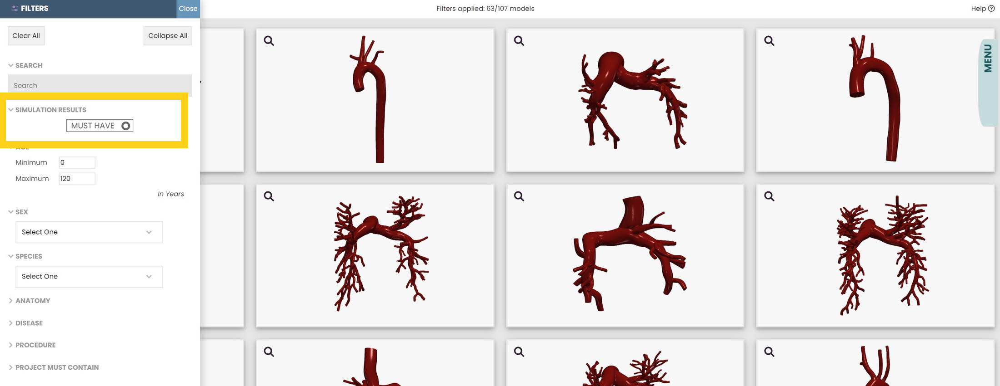
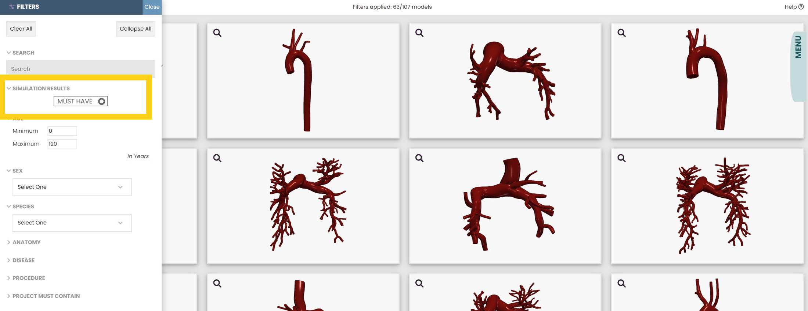
In the example above, the models that are the result of clicking
the simulation results button are those that have downloadable
.vtu and .vtp simulation result files.
The Age Filter
With the filter for age, you are able to search within an age range. The current minimum for the filter is 0 years of age, and the current maximum is 120 years.
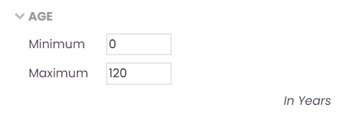Both the minimum and maximum bounds are inclusive. To apply the filter, hit the ENTER key.
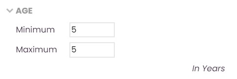 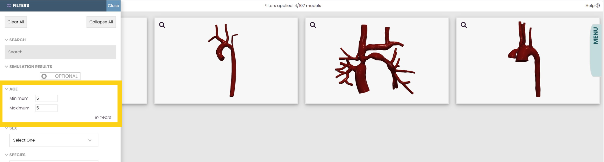In the example above, the models that are a result of the age filter entries are 5 years old.
The Drop-Down Menus
With the two drop down menus, you are able to search for models of a specific sex and species. To apply the filters, select the subcategory you are looking for.
 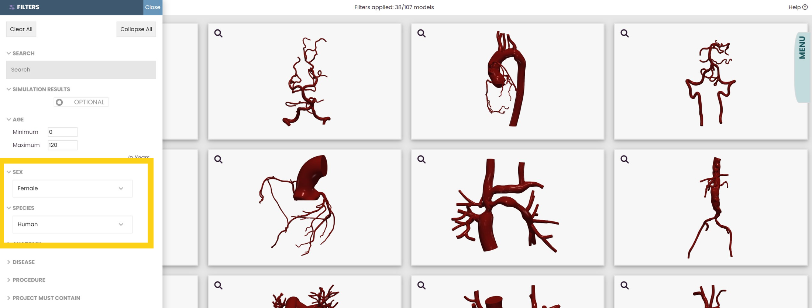
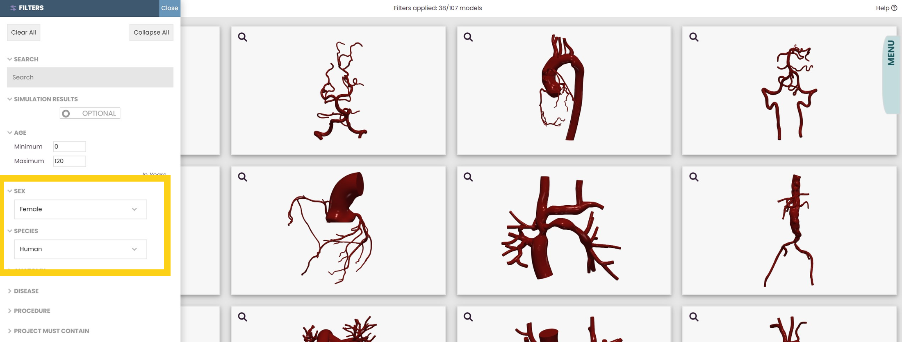
In the example above, the models that are a result of the drop down menu entries are both female and human.
To deselect a drop down menu entry without clearing all applied filters, click on the "Select One" option.


The Checkboxes
With checkboxes under the three categories "Anatomy," "Disease," and "Procedure," you are able to search for models of a specific anatomy, disease, or surgical procedure.
To apply the filters, click or unclick a checkbox.
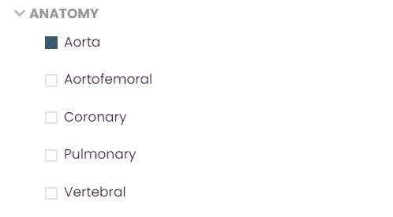 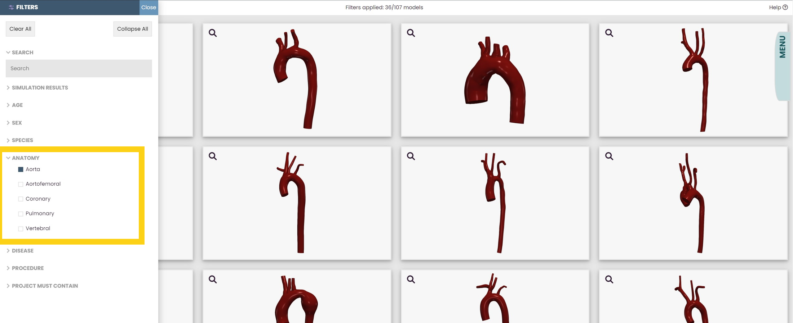In the example above, the models that are a result of the checkbox entries are of aortas.
Some models check off more than one box per category. However, selecting more than one option under a category will return the union of those entries. To search for models that specifically have 2+ entries under one category, you will find the search bar to be more helpful.
Between categories (such as "Anatomy" and "Disease"), the checkboxes act as an intersection of the entries.
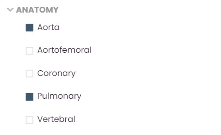 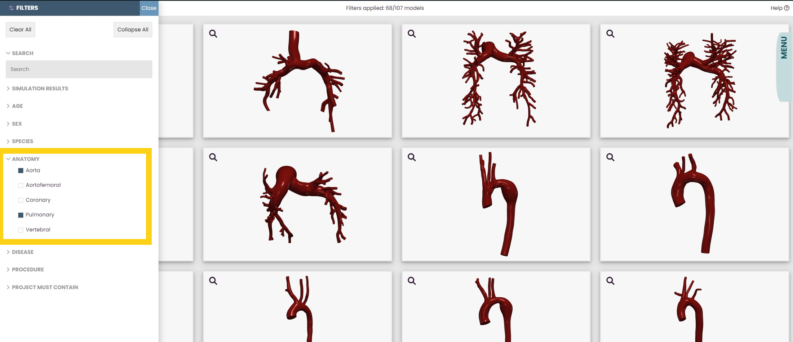In the example above, the models that are a result of the checkbox entries are either of aortas with aneurysm(s) or of coronary arteries with aneurysm(s).
The Project Must Contain Filter
A few models do not contain certain files. With the Project Must Contain filter, you are able to filter through the models that have the files you are looking to download.
Unlike the filter above, these checkboxes act as intersections. To apply the filters, click or unclick a checkbox.
 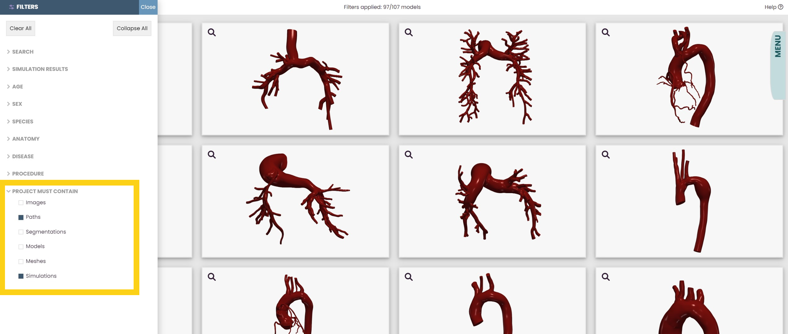
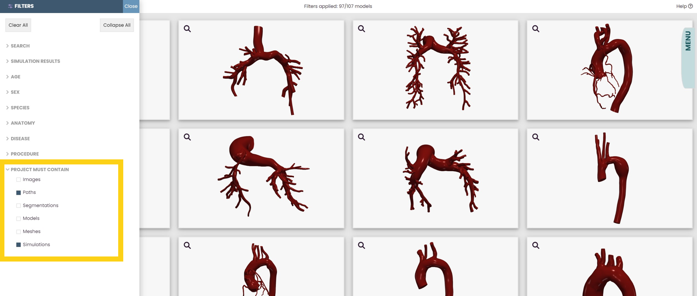
In the example above, the models that are a result of the project must contain entries all contain both "Paths" and "Simulations" file.